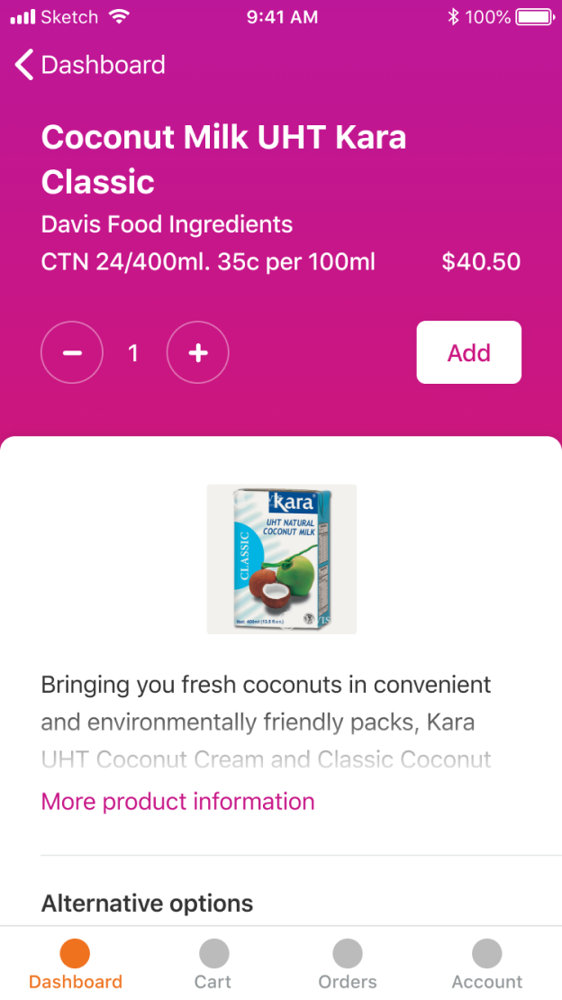

2019, Ordamatic



2019, Ordamatic
Aotearoa based startup developing wholesale ordering software for cafes, bars and restaurants.
In the initial stages of the software's redevelopment I conducted user research, developed prototype interfaces (briefly shown here), and ran user testing sessions.